Reports#
MEGFlow provides two report interfaces:
A portable static HTML report generated by the Nextflow workflow.
An interactive Streamlit report viewer started with
-ror--view_report.
The static report is the first place to inspect a completed run. The
interactive report is used when reviewers need to inspect the underlying
recording, edit sidecar files, and continue the workflow with Nextflow
-resume.
{kind=link}
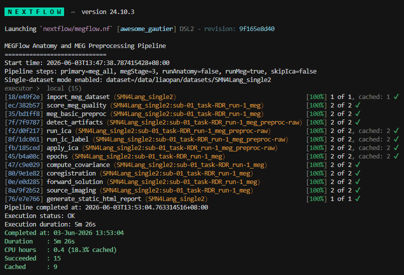
Fig. 1 A MEGFlow run records selected steps, task status, cache reuse, runtime, and completion statistics in the Nextflow console output.#
Static Processing and QC Report#
Every MEGFlow run that reaches a MEG milestone writes a static report under:
<output_dir>/static_html_report/
Open the report entry point:
<output_dir>/static_html_report/index.html
The static report can also be regenerated without rerunning the pipeline:
docker run --rm -it \
-v /data/bids:/input \
-v /data/out:/output \
-v /data/smri:/smri \
cmrlab/megflow:1.0.0 \
-i /input -o /output --fs_subjects_dir /smri --steps report
The report directory is self-contained and includes copied figures, sidecar
files, JSON summaries, CSV summaries, and a config snapshot when available.
Subject pages also include a collapsed Task Details table derived from the
Nextflow trace file when one is available. If a task failed or was ignored, the
page adds Task Failure Details with the error summary and packaged command
log excerpts.
Static Report Visual Tour#
The dataset dashboard is designed for triage. Start with the selected workflow, then move through aggregate metrics, completion status, alarm priority, and subject-level evidence.

Fig. 2 The workflow diagram is rendered from megflow_run_manifest.json and the
effective configuration. It changes with steps so reviewers can verify
that the report matches the intended run mode.#

Aggregate NMDQ score, bad-channel and bad-segment counts, coregistration distances, epoch rejection, status counts, and alarm totals are summarized at the dataset level.
{kind=link}
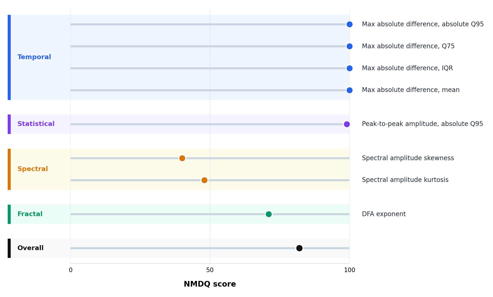
NormMEG-QC summarizes metric-family scores on a fixed 0-100 scale together with the overall NMDQ score, processing gate, and warning threshold.
{kind=link}
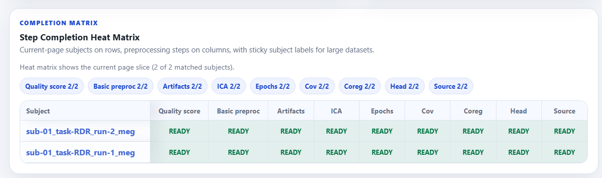
The completion matrix shows which stages completed for each recording, making partial runs and failed or skipped branches easy to identify.
{kind=link}
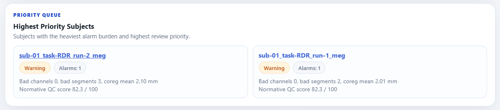
Alarm summaries highlight recordings that should be reviewed first before spending time on passed subjects.
{kind=link}
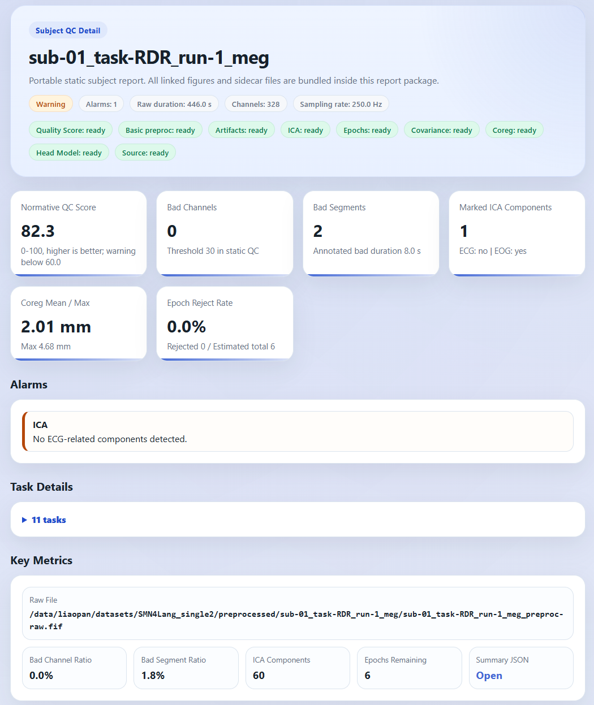
Subject pages collect alarms, stage-level evidence, packaged files, and Nextflow task logs for the selected recording.
Stage-Level Evidence#
Static subject pages include stage-specific figures so reviewers can inspect the evidence behind each warning or failed threshold.
{kind=link}
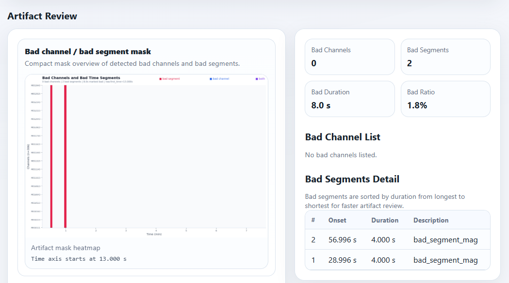
Bad-channel and bad-segment evidence is packaged with the report for offline inspection.
{kind=link}
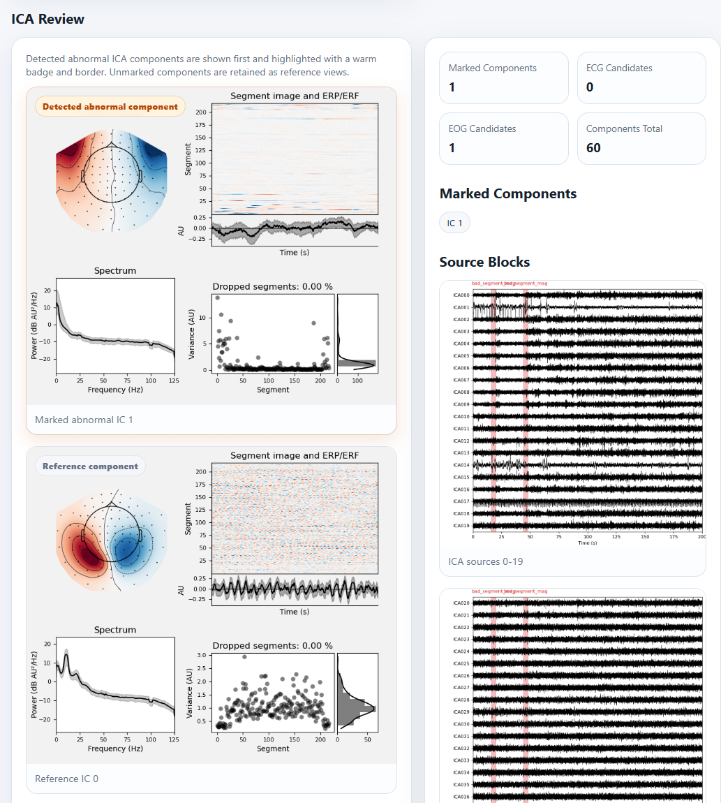
ICA labels, marked components, ECG/EOG candidates, topographies, and overlay plots are grouped on the subject page.
{kind=link}
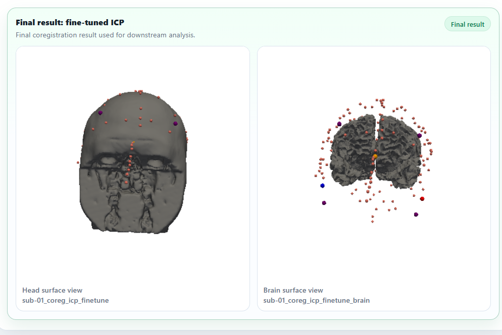
Coregistration figures and distance summaries help confirm that each MEG recording was matched to the intended MRI subject.
Report Contents#
Path |
Description |
|---|---|
|
Dataset-level dashboard with workflow diagram, aggregate metrics, subject table, alarm counts, and links to subject pages. |
|
Recording-level details for artifacts, ICA, coregistration, epochs, covariance, head model, source reconstruction, and packaged files. |
|
Searchable alarm list across all recordings. |
|
Machine-readable dataset summary. |
|
Spreadsheet-friendly subject summary table. |
|
Machine-readable per-recording summary. |
|
Effective Nextflow config snapshot when MEGFlow can locate one. |
|
Workflow mode and run metadata used to render the workflow diagram. |
|
Packaged |
|
Optional |
When dataset reports are bundled into a corpus report, the sticky navigation
follows the report hierarchy. Dataset-level pages link to Corpus overview;
subject pages link to their local Dataset overview so reviewing one subject
does not unexpectedly leave the current dataset.
Task Log Bundling#
By default, MEGFlow copies successful-task .command.log excerpts as well
as failed-task command logs so the portable report contains fuller task
provenance. Configure this with static_task_log_mode in the Nextflow
config, or pass --static_task_log_mode through the Docker entrypoint or
Nextflow command.
Value |
Behavior |
|---|---|
|
Default. Copy |
|
Copy command logs only for failed or ignored tasks when a smaller report package is preferred. |
|
Do not copy |
Example:
docker run ... cmrlab/megflow:<version> \
-i /input -o /output \
--static_task_log_mode all-command-log
How to Interpret the Static Report#
Start from index.html:
Review the workflow diagram to verify that the selected
stepsmode matches the intended run.Sort the subject table by alarms, bad channels, bad segments, coregistration distance, or epoch rejection rate.
Open subject pages for recordings marked
WARNorFAIL.For artifact alarms, inspect the bad-channel list, bad-segment table, and artifact mask heatmap. The heatmap summarizes where bad channels and bad time segments occur across the recording before opening the more detailed waveform images.
For ICA alarms, inspect marked components, ECG/EOG candidates, component topographies, and ICA overlay/PSD plots.
For coregistration alarms, inspect the staged coregistration figures and confirm that the recording was matched to the correct MRI subject.
If a subject is marked
FAILbecause a Nextflow task failed or was ignored, openTask Failure Detailsfirst, then expandTask Detailsfor the full trace context.
The report includes measured values, static alarms, and the NMDQ score produced
by NormMEG-QC when megqc.enabled = true. See
Quality Control Metrics for the complete metric list and score-gating
details.
Interactive Streamlit Report#
To view quality control reports through the interactive Streamlit interface,
run MEGFlow with Docker and expose port 8501:
docker run --rm -it -p 8501:8501 \
-v /data/megflow_output:/output \
cmrlab/megflow:<version> \
-r
The Docker entrypoint handles mounted output permissions automatically. It
starts as root, prepares /output when needed, then drops to the host UID/GID
inferred from /input. For report-only runs that only mount /output, the
UID/GID are inferred from /output instead, so an existing report directory
owned by the submitting user stays writable. If neither mount has the desired
owner, pass -e LOCAL_UID="$(id -u)" -e LOCAL_GID="$(id -g)".
Then open:
http://<server_ip>:8501
Use http://localhost:8501 when running locally. The Streamlit report is a
viewer and does not run Nextflow preprocessing.
For corpus-mode outputs, mount the output root and pass it as -o:
docker run --rm -it -p 8501:8501 \
-v /data/megflow_corpus_output:/output \
cmrlab/megflow:<version> \
-r -o /output
The Streamlit entrypoint detects /output/datasets/<dataset_name>/ and adds
a corpus dataset selector in the sidebar. After selecting a dataset, the usual
interactive pages read that dataset’s preprocessed/ tree. If
/output/smri/<dataset_name>/ exists, it is used as that dataset’s
FreeSurfer SUBJECTS_DIR.
Interactive Review and Editing#
The interactive report reads the same processing outputs used by the static
report, but allows reviewers to inspect and edit selected sidecar files. After
saving edits, rerun MEGFlow with -resume so the downstream tasks that depend
on those sidecars are recomputed.
{kind=link}
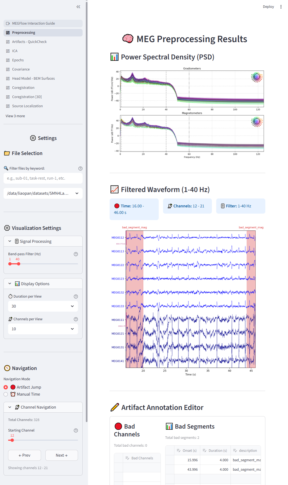
Review PSD and waveform evidence, edit bad channels or bad segments, and save corrections for resumed downstream processing.
{kind=link}
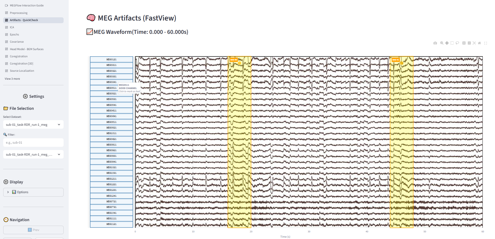
MEGFlow can generate waveform images for quick browser review when
artifact_images_enabled: true is configured.
{kind=link}
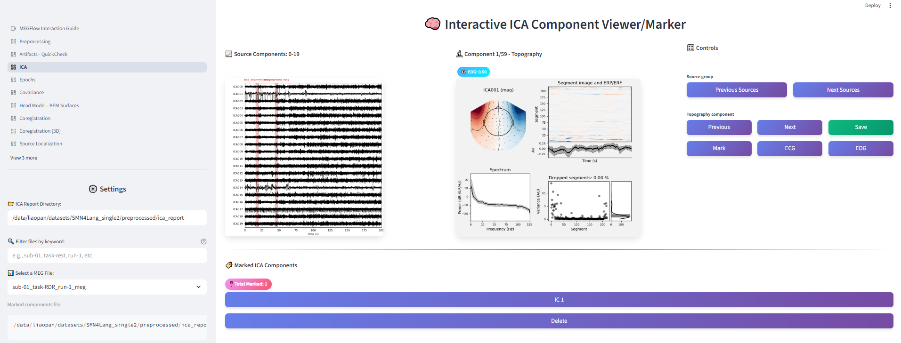
Review automatic ICA labels, inspect component evidence, edit artifact labels when needed, and save the selected components.
{kind=link}
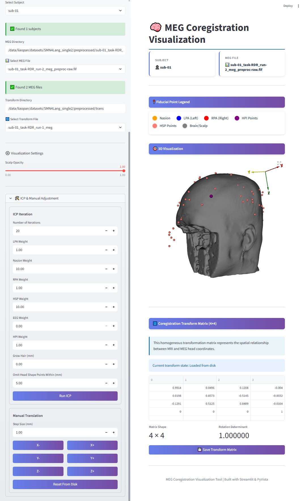
Inspect the alignment, run ICP, manually adjust the transform when needed, and save the corrected coregistration matrix.
{kind=link}
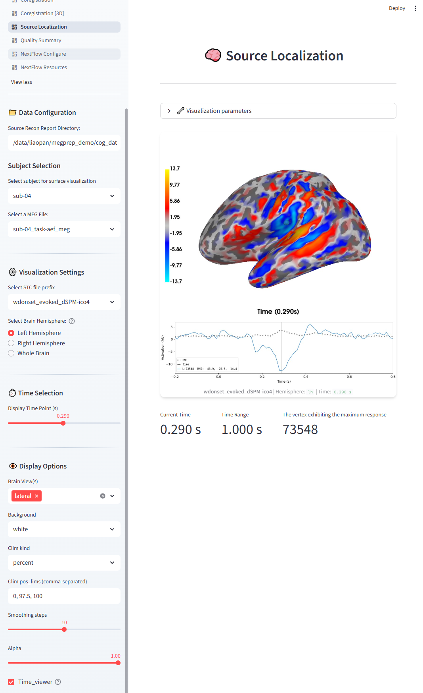
Fig. 3 Source review provides an interactive view of source-localization results, including time navigation for inspecting source estimates at different latencies.#